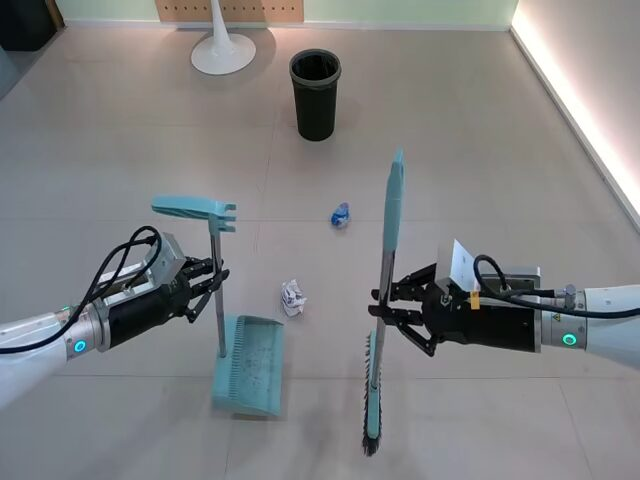
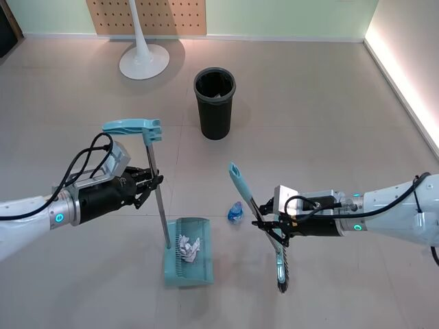
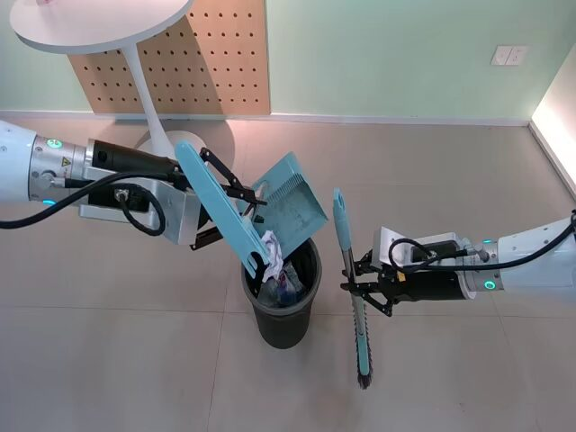

Innata-0
The first native embodied world system
Innata Team
Beijing Academy of Artificial Intelligence
The model reads the task state the agent writes
The physical world is open-ended, dynamic, and only partly observable. A model on its own struggles to stay reliable over a long task, above all when it must correct itself; bolting an agent onto a finished model can leave planning and physical control out of step. Innata-0 designs the two together, around one task interface that both of them use.
“Native” names three capabilities that neither part has alone: Plan, carrying a long task through by coordinating the model across subtasks; Recover, handling uncertainty and unexpected failure during execution; and Evolve, consolidating verified experience into skills that later runs can reuse.
A model alone, or an agent bolted on: neither holds
So the model and the agent are designed together.
Innata-0-WAM
Physical execution foundation
One network understands the scene, predicts how it will change, and generates continuous action chunks for the active subtask.
Never has to infer the overall structure of the task, or decide when a subtask is finished.
Innata-0-Agent
System coordinator
It breaks a long task into subtasks the model can execute, decides from physical evidence when each is done, and takes over the live scene when execution leaves course.
Never has to write low-level control code, or wait for the model to be retrained before it can use what it learned.
Training annotations fill the three fields; during execution the agent maintains the same representation and updates it from verified physical outcomes. Successful rollout segments, including corrective actions and what follows a recovery, return through the shared data pipeline for subsequent policy training.
One recording, many lessons
Annotated once, reused for understanding, prediction, action, and touch
Co-design starts in the data: the annotations that train the WAM fill the same task fields the agent maintains at run time. The WAM learns mainly from open datasets and web-accessible corpora: image–text pairs, general video, egocentric human video, real-robot recordings, and robot simulation.
A video holds more than its caption says. Task-oriented knowledge refinement annotates each recording once (its events, participants, and stages) and derives what each objective needs: a grounding question for understanding, an instruction-conditioned prediction for video, an action example for control.



No single embodiment exceeds 21% of the joint-space pool
Touch on one shared hand surface
Tactile sensors on gloves, dexterous hands, and grippers report contact in different forms: pressure readings, directional force arrays, or images of surface deformation. Each sensor is calibrated once onto a shared MANO hand surface, and its readings are summarized per region as a 28-dimensional proxy: contact centers, resultant force and moment, contact area and shape, spread, and peak.
Missing coverage stays separate from measured absence of contact, so an unsensed region or an invalid reading is not taken as evidence of no contact.
Three towers, one shared attention
Every action is generated with a prediction of how it will look and feel
All of that supervision trains one network. Innata-0-WAM is a tri-tower Mixture-of-Transformers: one tower for understanding, one for world prediction, and one that generates action and touch together. Video, action, and tactile tokens attend to one another within each sample, so an action chunk comes with the future video and, where sensors exist, the future touch. Observed frames, with robot state and tactile observations where available, are the conditions.
UUnderstanding
8B, fine-tuned from Qwen3-VL-8B. Grounds language in scenes, objects, and spatial relations, with an emphasis on the 3D grounding manipulation needs. Its attention is causal; it supplies conditioning features to the generation streams.
VWorld prediction
8B backbone of Cosmos 3 Nano. Predicts future video latents by flow matching, and when a time-aligned action trajectory is given, predicts the visual consequences of that action.
ATAction and touch
About 1B parameters: the same 36 layers as the 8B towers, at width 1280. Generates continuous actions and, where sensors exist, future tactile states. 64 domain-aware projection slots let gripper, dexterous-hand, and joint-space control share one Transformer; end-effector and joint targets keep separate layouts.
Knowing an action finished is not knowing the task succeeded
The WAM executes one subtask at a time; it does not decide when to move on. The agent does, and it decides from physical evidence, because a gripper command can finish with nothing in the gripper. It plans what the model should execute, checks what actually happened, takes over when an anomaly is verified, and carries what it learned into later runs.
Plan: Three layers of memory carry experience forward without a model update
- Task memory The agent's running summary of the episode: progress, completed subtasks, open dependencies, relevant object states, anomalies, and recovery outcomes.
- Physical state memory A spatial component keeps object locations and scene relations beyond the current view; a tactile component keeps verified interaction states, such as whether an object is still held.
- Causal interaction memory Validated transitions distilled into precondition, action, and effect, reusable for planning and recovery without an immediate model update.
Plan: A stage changes only on evidence
The agent reviews progress at intervals and classifies the current subtask as complete, in progress, or uncertain. It advances only when evidence shows the subtask is done. The finished stage moves into the history, and the model receives the next subtask.
Not a failure Slow progress, or a view that is briefly ambiguous.
A failure Evidence over time that execution has left the intended course of the task.
One run, three lanes
The agent structures the task, the model executes it in action chunks, and the agent checks the result at scheduled points. When a check verifies an anomaly, the model stops and the agent finishes the task.
Recover: Once an anomaly is verified, the agent takes over
Execution by the model is suspended and control passes to the agent, which works on the live scene and carries the task through to its end. It does not generate low-level control code: it selects tools from four groups (observation, perception, motion adjustment, and atomic skills), sets their bounded parameters, and composes them into short closed-loop interventions of at most 20 reasoning-and-tool rounds.
- Observe
- Reason
- Act
- Verify
One recovery, step by step
RoboCasa365, a searing task. The model has been executing, but the pan is not on the active burner. The agent verifies the mismatch at step 2304 and takes over the live scene; the task reaches its official success condition at step 2702.
After each intervention the agent collects fresh observations to see whether the intended change occurred. During a run, recovery works from the current state of the scene; the episode is not reset or replayed.
Evolve: Experience becomes skill only after it is validated
Three things change at three different speeds. Task state updates throughout a run. Skills are revised between runs, and only after validation. Model weights change only in subsequent training. The protocol gives experience a place to go outside the model's parameters.
- Two skills per taskVerify and recover A verify skill captures the observable signs of failure; a recover skill describes which tool combinations work and when to use them. Both are kept as versioned artifacts.
- Between runsAccumulate Failures are diagnosed in hindsight and can be replayed. A candidate strategy is retained only when it executes valid physical actions and produces the intended, task-consistent outcome. Failed attempts are kept too, as evidence of when a strategy should not be used.
- Before promotionValidate Each revision is versioned and evaluated on fresh held-out configurations before it replaces the one in use. A configuration that has informed a revision is not reused as held-out evidence for the next one.
- During deploymentHold the version fixed Each run uses the latest validated pair throughout. What it records can inform a later revision; it does not change the skills in use.
Subsequent training draws on successful rollout segments. The evaluations below measure the system with the agent as a whole; they do not isolate what successive skill revisions contribute.
What the agent adds to the same model
First the model on its own: the understanding tower on vision–language benchmarks and the world-prediction tower on video prediction. Then the same model with and without the agent in closed-loop simulation, and control through touch. Reference scores follow the sources noted under each figure.
The foundation It understands, and it predicts.
Understanding: better than its initialization on 16 of 18 benchmarks
Against seven reference models, the understanding tower ranks first on nine benchmarks and in the top two on fourteen.
Show all eight models
Video prediction: 67.63 on WorldArena 2.0, the highest of the four models we evaluated
Track 1, 1,000 RoboTwin 2.0 episodes. Given a first frame, an instruction, and an action trajectory, predict the video that follows. Innata-0 conditions on the action trajectory; each baseline uses the inputs its released checkpoint supports.
Add the agent Success rises on both benchmarks, and the model did not change.
RoboCasa365: the same checkpoint gains 11.2 points on unseen task compositions
50 tasks, 2,500 episodes. Both configurations use the same WAM checkpoint and full-task instructions; only the agent differs. Overall success goes from 60.2% to 65.4%, and the gain is largest where tasks are hardest.
| Model | Type | Overall | Atomic-Seen | Composite-Seen | Composite-Unseen |
|---|---|---|---|---|---|
| GR00T 2–SFT | WAM | 67.2 | 87.4 | 73.6 | 38.2 |
| Awomo-0.5V | WAM | 62.5 | 85.0 | 60.4 | 39.4 |
| Axiom-0 | VLA | 61.6 | 86.5 | 59.4 | 35.8 |
| RPent | AGENT+VLA | 59.2 | 87.8 | 43.8 | 42.5 |
| WorldDreamer v5 | WAM | 57.5 | 82.0 | 56.0 | 31.3 |
| Xiaomi-Robotics-1 | VLA | 57.4 | 80.2 | 57.1 | 32.1 |
| Meituan-Robotics-0 | VLA | 55.0 | 77.3 | 57.8 | 27.1 |
| ABot-M0.5 | WAM | 40.3 | 75.6 | 37.7 | 3.3 |
| π0.5 | VLA | 16.9 | 39.6 | 7.1 | 1.2 |
| GR00T 2† | AGENT+WAM | 81.8 | 88.2 | 86.9 | 69.5 |
| Innata-0 | WAM | 60.2 | 88.4 | 56.1 | 32.4 |
| Innata-0 | AGENT+WAM | 65.4 | 90.6 | 58.9 | 43.6 |
RoboDojo-Sim: with the agent, average success rises from 15.98% to 24.17%
With a fixed plan (VLM + WAM), Innata-0 has the strongest generalization among the listed models. Adding the agent raises the success rate on all five dimensions, most on Open tasks (9.63% to 26.66%), then Generalization (23.67% to 33.20%) and Precision (11.04% to 19.20%).
| Method | Type | Average | Generalization | Precision | Long-horizon | Memory | Open |
|---|---|---|---|---|---|---|---|
| InternW0-Δ | WAM | 30.77 / 23.91 | 30.09 / 22.78 | 31.98 / 23.25 | 46.29 / 29.33 | 34.67 / 34.00 | 10.84 / 10.17 |
| Liber-0 Preview | VLM + WAM | 30.74 / 25.52 | 24.99 / 18.61 | 38.28 / 33.17 | 45.98 / 33.17 | 37.77 / 37.33 | 6.68 / 5.33 |
| Meituan-Robotics-0 | VLA | 21.68 / 15.73 | 16.31 / 10.50 | 21.24 / 11.17 | 27.07 / 13.92 | 39.52 / 39.22 | 4.28 / 3.83 |
| ME-Brain-1.0 | VLA + WAM | 21.67 / 15.99 | 21.81 / 15.34 | 24.23 / 15.92 | 32.96 / 20.58 | 23.53 / 22.78 | 5.83 / 5.33 |
| GalaxeaVLA (G0.5) | VLA | 20.23 / 14.88 | 18.46 / 12.83 | 28.25 / 20.42 | 44.12 / 32.25 | 8.61 / 7.33 | 1.73 / 1.58 |
| Xiaomi-Robotics-1 | VLA | 20.07 / 13.93 | 23.54 / 17.00 | 26.69 / 18.83 | 38.39 / 23.67 | 7.81 / 6.56 | 3.94 / 3.58 |
| MachEmbodied-U0 | WAM | 17.78 / 11.51 | 16.07 / 8.78 | 24.20 / 16.67 | 36.66 / 22.25 | 8.16 / 6.67 | 3.78 / 3.17 |
| Hy-Embodied-0.5-VLA | VLA | 13.07 / 8.80 | 11.78 / 8.39 | 13.81 / 8.00 | 25.74 / 14.92 | 13.37 / 12.11 | 0.65 / 0.58 |
| Cosmos3-Nano† | WAM | 3.03 / 0.93 | 2.58 / 1.00 | 2.29 / 0.00 | 8.74 / 2.75 | 1.23 / 0.67 | 0.30 / 0.25 |
| Innata-0 | VLM + WAM | 23.04 / 15.98 | 30.88 / 23.67 | 21.58 / 11.04 | 32.31 / 18.56 | 19.90 / 17.00 | 10.53 / 9.63 |
| Innata-0 | AGENT + WAM | 30.02 / 24.17 | 39.01 / 33.20 | 27.07 / 19.20 | 32.99 / 20.00 | 23.58 / 21.78 | 27.46 / 26.66 |
The agent steps in where the model needs it: on RoboCasa365, 85.8% of Atomic-Seen episodes finish without any recovery, against 50.6% of Composite-Seen and 26.3% of Composite-Unseen.
With touch First on both tactile benchmarks.
Touch: first on both the gripper and the dexterous-hand benchmark
One regional tactile representation serves both: touch is an observation the model conditions on and a target it predicts together with the action.
Cite
@techreport{innata2026,
title = {{Innata-0: A Native Embodied World System with Model-Agent Co-Design}},
author = {{Innata Team} and Bai, Yu and Bai, Ziyi and Cai, Yuxuan and He, Chenrui and Li, Wenhao and Lin, Zhe
and Wang, Heng and Yuan, Hai and Yu, Zhiwei and Zhang, Yuanhang and Chen, Luyou and Gao, Tiezhu and Geng, Zheng
and Guo, Jinbang and Han, Dongxu and He, Diqi and Karlsson, B{\"o}rje F. and Li, Jintao and Li, Zhiyu
and Linghu, Xiongkun and Liu, Guang and Liu, You and Luo, Zhen and Lyu, Mengsi and Lyu, Yufeng and Lyu, Zheng
and Ma, Quanyue and Men, Chunlei and Ni, Ziqiang and Pan, Tengfei and Shen, Yijun and Sun, Liang and Xie, Shaoxuan
and Yang, Xiang and Yao, Guocai and Zhang, Hongjun and Zhao, Yingli and Lin, Yonghua
and Wang, Zhongyuan and Yang, Huan},
institution = {Beijing Academy of Artificial Intelligence},
year = {2026},
month = nov,
url = {https://baai-eai.github.io/innata-0}
}